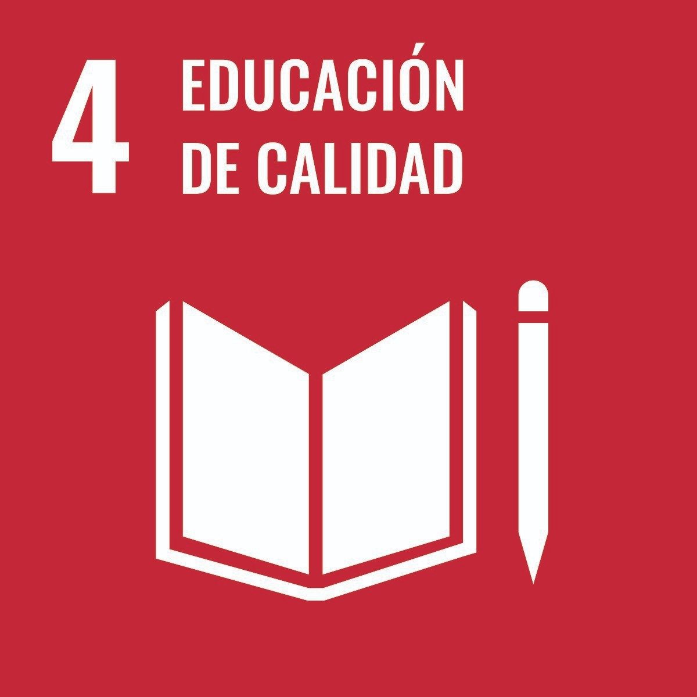
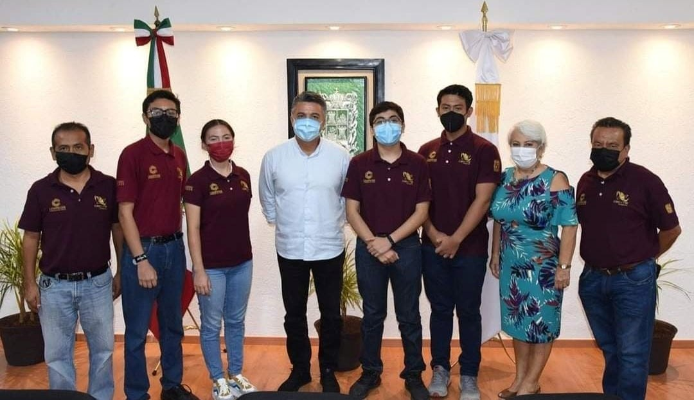
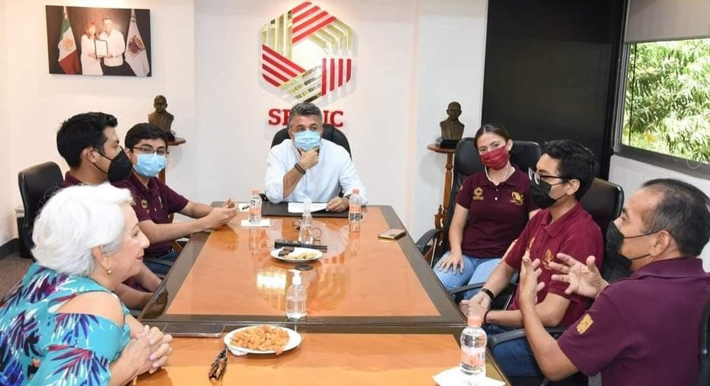
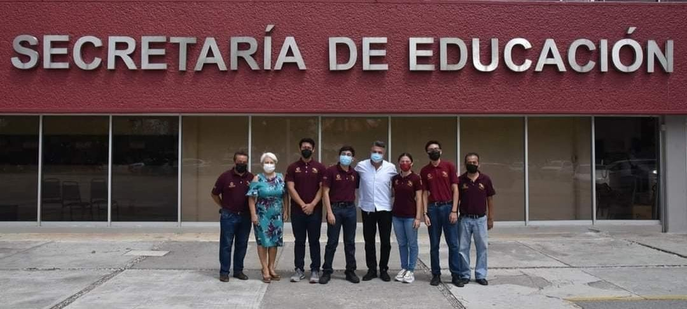
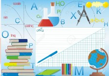

Somos el equipo conformado: por Perla María Pereyra Medina, Aitor Eduardo Ceballos Escobar, Marcos Osorio Rodrigues Piña, José Manuel Castillo Queh y también contamos con nuestros asesores: Ing. Alberto Enrique García Gómez y el Ing. Claudio Suarez Aguirre. Somos estudiantes del CECYTE Campeche T.M cursando la carrera de Mecatrónica. Somos un equipo con ideas innovadoras que, basándonos en la ODS número 4 de las naciones unidas, creamos esta apliacicacion buscando combatir y minimizar el rezago de aprendizaje, apuntando de forma piloto al nicho infantil, puesto que son los principales victimas de este gran problema.
Combatir y reducir el rezago de aprendizaje en los primeros años de educación primaria provocado por el confinamiento debido a la pandemia COVID 19.
OBJETIVOS SECUNDARIOS
Enseñar y reforzar en niños y niñas en los primeros años de primaria la habilidad de la lectura y la aritmética básica mediante una app.
Reducir el porcentaje de analfabetismo e inhabilidad aritmética en nuestra entidad y en el país.
Hace algunos años, a la fecha de escrita esta memoria en el año 2022, ocurrió un suceso que tomó por sorpresa al mundo: La pandemia de covid-19.
Dicho suceso impuso una serie de cambios radicales casi forzosos dentro de la vida de muchas personas. Uno de los muchos catastróficos cambios fue, sin duda alguna, la educación a distancia.
Pasamos de toda una vida estando tomando clases en las aulas, platicando con amigos y profesores y conviviendo en un entorno agradable a que, sin previo aviso pasemos a tomar clases por la tele, por met o zoom o resolver cuadernillos, todo en nuestras casas. Fue sin duda alguna una experiencia que para la mayoría de la comunidad estudiantil fue nueva y a la vez interesante. Pero existe un detalle con la educación a distancia que bajo la unanimidad en la opinión de la comunidad estudiantil, se sentían, por así decirlo, incompletas
Hubo muchas experiencias, dinámicas, temas, conocimientos que se perdieron durante ese tiempo de encierro, produciéndose una falta de aprendizaje general, en comparación a lo que deberíamos de haber aprendido en clases presenciales. Según algunas fuentes oficiales como el IMCO, debido a la pandemia se produjo un rezago de aprendizaje de alrededor de 2 años. Ahora, invito al presente lector a poner la siguiente imagen en su cabeza y reflexionar un poco. Si se produjo un rezago de aprendizaje, en al menos dos años, en alumnos de nivel preparatoria y secundaria, alumnos con la capacidad de consulta e investigación en internet bien desarrollada, ¿Cuál fue el nivel de rezago en los niños y niñas que estaban en primaria?, ¿De los que apenas estaban entrando?, ¿De los que solo llevaban cuadernillos?, ¿De los que no saben leer, sumar o restar?.
El analfabetismo y la inhabilidad matemática son problemas que ya se venían dando antes de la pandemia pero que se vieron potenciados después de la llegada de esta. Y son precisamente estos problemas los que queremos abordar. Un problema el cual está contemplado en la ODS número 4 de las Naciones Unidas.
Situaciones familiares, económicas, situaciones escolares de todo tipo se vieron inmersas dentro de las causas de la problemática, además de que la forma de transmitir la información a los alumnos, aunado a una edad muy temprana de los mismos y como cereza del pastel la extrema libertad que implica esta modalidad de estudio dieron paso a estas mencionadas consecuencias
El rezago en los aprendizajes es un serio y generalizado problema de nuestro sistema educativo, y como es el caso de la mayoría de los problemas educativos, se ha acentuado durante la presente pandemia
“El rezago en los aprendizajes se define como: La condición de los niños y adolescentes que, aun yendo a la escuela, no adquieren los aprendizajes esperados según su edad y año escolar. Es decir, se refiere a los estudiantes que no aprenden, pero que sí asisten a la escuela.” Vergara, Hevia (2018)
Edu-Camp es una app con objetivo educativo que mediante una línea de aprendizaje vectorial, pasando desde lo más básico y fundamental a lo más complejo, enseña los fundamentos de la lectura y la comprensión lectora, además de las operaciones aritméticas básicas. La aplicación se auxilia de material interactivo y didáctico, tales como videos, actividades interactivas y minijuegos. Cabe resaltar que la app está dirigida para los niños en los primeros años de primaria, los cuales no sepan, tengan problemas o simplemente necesiten recordar algún tema de los anteriormente descritos.
Entre nuestros modelos de negocio expresamos patentar nuestro proyecto y licenciar nuestro producto a empresas relacionadas para que les hagan adecuaciones dependiendo de sus circunstancias puede ser una excelente fuente de ingresos.
En la reunión con el secretario de educación del estado de Campeche, Raúl Aaron Pozos Lanz, se llegó a un acuerdo de apoyo en el proyecto, de tal manera que expresó su deseo de ayudar en la creación de la app, haciendo el compromiso de hacer una prueba piloto en algunas escuelas primarias en la entidad, buscando que una vez concluida esta prueba la app de sea patentada e incluirlo el siguiente ciclo escolar dentro del material de apoyo.
Todo lo relacionado a la colaboración, apoyo y proceso de patentar la app lo podemos ver oficialmente, en las redes sociales como Facebook de SEDUC, del colegio del CECYTEC, así como en el del secretario de educación Raúl Pozos Lanz. Además de contar con un escrito que avale toda esta información.
Nuestra app, en la forma de lanzamiento, si bien tiene mucho impacto y es de gran alcance, tenemos planeado ingresar algunas características extra a la app para hacerla más completa.
De entrada, el problema que tratamos es muy extenso como para quedarnos solamente en los primeros años de primaria con solo la lectura y la aritmética. Si bien esto que estamos abordando es extremadamente importante y prácticamente la base del aprendizaje, estamos buscando dentro de nuestros planes a futuro, integrar otras ramas del conocimiento, contenidos y materias, además de abarcar otros grados escolares, no solamente primaria. Evidentemente, lo anterior lleva una adaptación en el estilo de aprendizaje y de consumo de información que se tiene presente en el diseño a futuro.
Ahora bien, para conservar en aspecto inclusivo y como cereza de pastel en nuestra app, tenemos el objetivo a futuro de traducir todo el contenido de la app a las lenguas indígenas regionales y más habladas, empezando obviamente por el maya. Esto lo haremos para que las personas de estas comunidades no se queden fuera del tren Edu-Camp y puedan disfrutar de los beneficios que esta tiene por ofrecer, ya que, a nadie se le debe negar la educación.